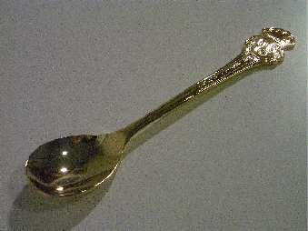
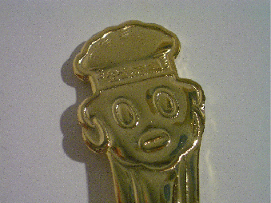
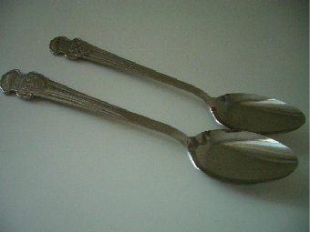
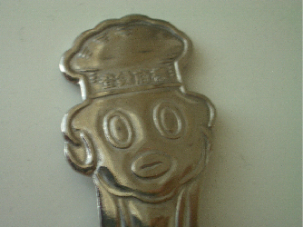

|
なないろまーぶる collection 
|
 2002年「がっちりプレゼント」で当選した 金のティースプーンです。 24金のメッキが施されています。 カレーの箱を開けたら当たり券が入っていました。 当たり券があるなんて知らなかったので びっくりしました。 
上に穴があります。キーホルダーやストラップに 出来るそうです。 もったいないのでもちろんしていません。←貧乏性（笑） そんな使い方、斬新ですね。 実際された方はいるのだろうか･･･。 
「ゴールドスプーンプレゼントキャンペーン」 で当選したスプーンです。こちらも24金のメッキが 施されています。 この時一緒に同封されていた資料によると 作られた時代によって30種以上あるそう。 一本5万円するスプーンもあるそうです（￣□￣；） そんなスプーンでは、カレーは食べにくいなぁ。  拡大。 オリエンタルの懸賞は楽しいので、そのうちにまた応募しようと思っています。 2008年現在、金のスプーンだけでなく、手ぬぐいやストラップも当たるようです。   通常のスプーン。 カレーセットに入っていました。 |